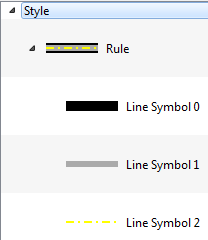
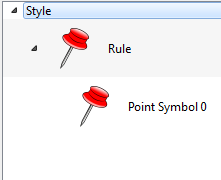

It is accessible through:
Layer Explorer > Right Click over a Layer-name > Style Explorer
View > Style Explorer
The
explorer style has three distinct components:
Note: The modifications on the selected symbol is effective only on the preview of the Style Explorer.
- Explorer: Uses a tree structure to represent the hierarchy of the style associated with the layer. The structure is:
- Style: It is the top level. Represents the layer style. The style has a set of Rules.
- Rule: A rule is a symbology set to a restriction on a data set. The default rule has no restriction and includes all data. The rule has a set of Symbolizers.
- Symbolizer: Defined as data set should be presented.

- Tool Bar: Provides tools for the user to manipulate the style. The tools are:
- Draw: The drawing tool is only a shortcut to the Draw Tool in the application.
- Add: Add a new symbol. The symbol will be created within the selected rule and always will be a clone of the selected symbol.
- Remove: Removes the selected symbol.
- Up: Changes the order of the symbol in the tree, rising the symbol.
- Down: Changes the order of the symbol in the tree, lowering the symbol.
- Preview Scale: Allows you to change the size of the preview box.
Note: The modifications on the selected symbol is effective only on the preview of the Style Explorer.
- Symbology: This component allows the user to modify the symbol, having access to all property belongs to the selected symbol. The properties may vary depending on the data type. The data types and their properties are:
- Polygons:
- Lines:
- Basic Symbology (only stroke).
- Points:
- Raster:

Properties:
Properties:
The only parameters for a Local Image is:


Symbolizers
A
Symbolizer is an abstract type for encoding the graphical properties
used to portray geographic information. A Symbolizer
describes how a feature is to appear on a map. The Symbolizer describes
not just the shape that should appear but also such graphical
properties as color and opacity. A Symbolizer is obtained by specifying
one of a small number of different types of Symbolizers and then
supplying parameters to override its default behaviour.
Basic Symbology
Basic Fill
A Fill specifies the pattern for filling an area geometry.Properties:
- Color: Sets the color used to draw the fill.
- Opacity: Sets the opacity to draw the fill.
Basic Stroke
A Stroke specifies the appearance of a linear geometry.Properties:
- Color: Sets the color for the contour drawing.
- Opacity: Sets the opacity for the contour drawing.
- Width: Sets the width for the contour drawing.
- Dash: Sets the dash for contour drawing.
- Join: This property defines how a line should be joined (between line segments).
- Cap: This property defines how a line should be capped (at the two ends of the line).
Graphic Symbology
A Graphic is a graphic symbol with an inherent shape, color(s), and possibly size. A graphic can be defined very informally as "a little picture" and can be of either a raster or vector-graphic source type.Graphic Properties
The basic parameters of a graphic symbology are:- Size: Sets the size for the graphic drawing. If a size is specified, the height of the graphic will be scaled to that size and the corresponding aspect will be used for the width.
- Angle: Sets the angle for the graphic drawing. Its gives the rotation of a graphic in the clockwise direction about its center point in decimal degrees, encoded as a floating-point number. Negative values mean counter-clockwise rotation.
- Opacity: Sets the opacity for the graphic drawing.
Well Known Mark
A
Mark specifies a geometric shape and applies coloring to it.
The Well Known Mark element gives the well-known name of the
shape of the mark. Allowed values include at least "square", "circle",
"triangle", "star", "cross", and "x", though map servers may
draw a different symbol instead if they don't have a shape for
all of these.
The basic parameters of a Well Known Mark are:
The basic parameters of a Well Known Mark are:
- Type: Defines the Well Known Mark type.
Glyph Mark
The
alternative to a Well Known Mark is an external mark format.
The Glyph Mark allows to use a TrueType font file and select
an individual glyph from that file.
The basic parameters of a Well Known Mark are:
The basic parameters of a Well Known Mark are:
- Font: Defines the True Type font to be used.
- Char: Defines a specific character in the font selected.
Local Image
Another type of mark that can be defined are the image files (png files).The only parameters for a Local Image is:
- Image: Displays a dialog box that allows you to choose a local file containing an image.
Raster Symbology
A
Raster Symbology is used to specify the rendering of
raster/matrix-coverage data (e.g., satellite images, DEMs).
The basic parameters of a Raster Symbology are:
The basic parameters of a Raster Symbology are:
- Opacity: Sets the opacity to draw the raster.
- Enhancement: Allows you to apply enhancements over the image so that the changes are applied equally on all bands.
- Brightness: Lets you adjust the brightness of the image.
- Sharpness: Lets you adjust the sharpness of the image.
- Channel Selection: The Channel Selection property specifies the false-color channel selection for a multispectral raster source (such as a multi-band satellite-imagery source).
- Mono: Defines a band to be displayed on the gray channel.
- Red: Defines a band to be displayed on the red channel.
- Green: Defines a band to be displayed on the green channel.
- Blue: Defines a band to be displayed on the blue channel.
- Composition: Allows selection of three bands to do the color composition on red, green and blue channels.
- Contrast Enhancement: Improves the contrast of each individual channel image.
Example
The following is an example of using different display styles defined from the styler explorer. Three vector data were used in this example:- Polygons: Brazil.
- Lines: Highway of Brazil.
- Points: Capitals of Brazil.